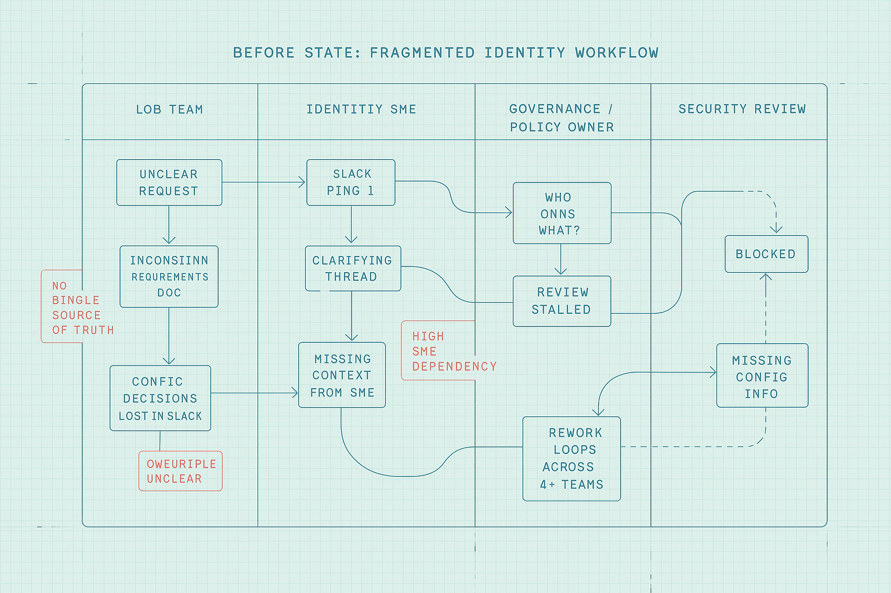
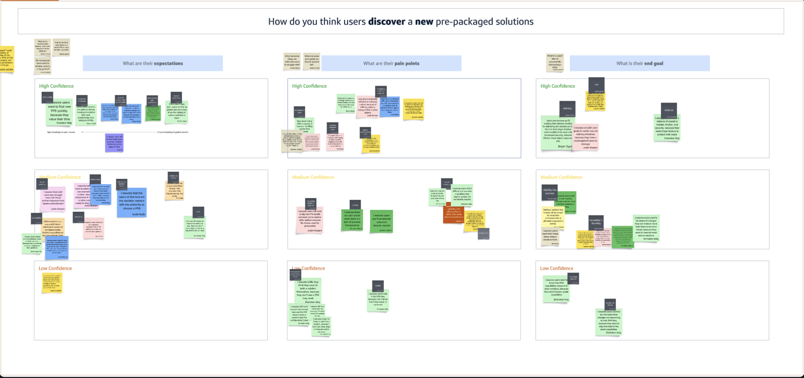
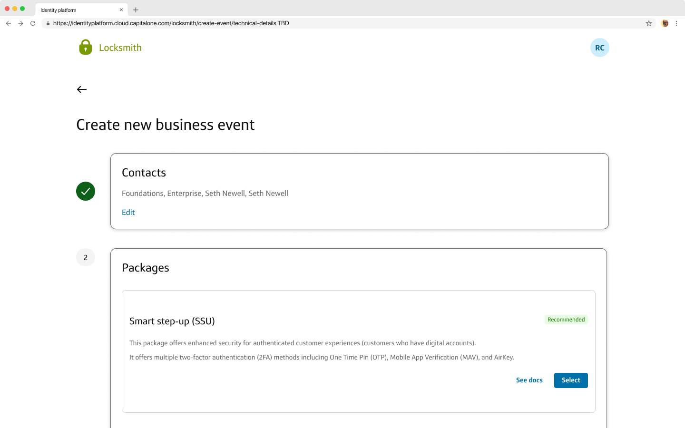
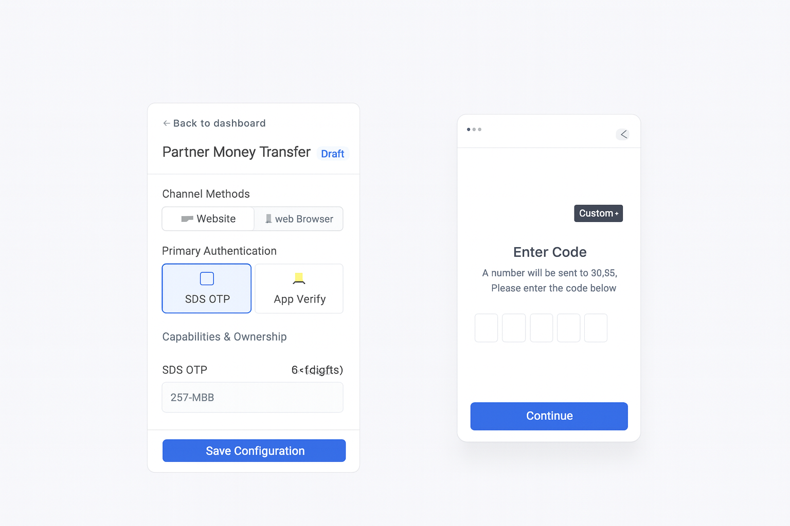
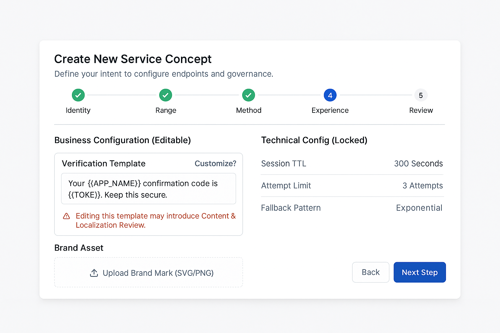
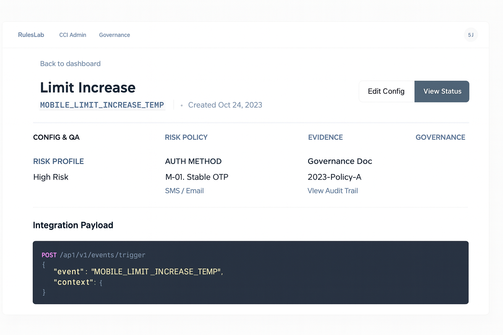
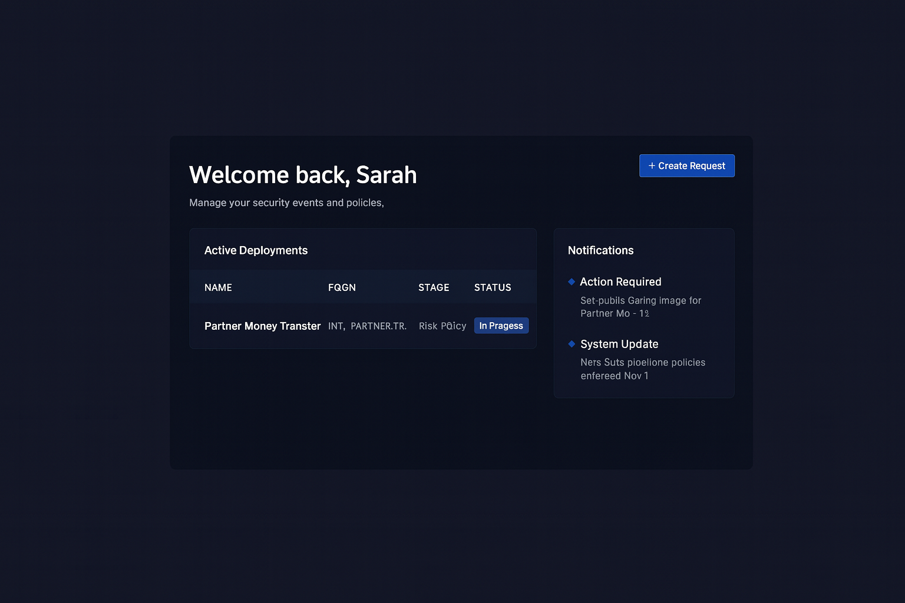

Enterprise identity: powerful, but fragile without the system behind it
When I joined the Identity Platform team, one thing was clear: enterprise identity was powerful… but fragile.
The platform worked well for insiders, but teams across the org struggled to operate it safely without deep institutional knowledge. Launching or updating authentication policies required translation across product, fraud, governance, and engineering, and that translation created delays, rework, and risk.
Teams weren't blocked by UI. They were blocked by uncertainty: inconsistent mental models, unclear ownership, and a lack of a clear path from intent to configuration.
I co-led the design effort to define that system: setting the end-to-end experience strategy, shaping self-service foundations, and mapping the "moments that matter" across the authenticator lifecycle.
All visuals in this case study are intentionally abstracted, but structurally close enough to represent the real system.
This wasn't just a UX issue. It was a platform translation issue.
Identity is the backbone of every digital experience, but internally, important work stalled in translation.
Product managers, fraud analysts, governance partners, and CI admins were looking at the same system through different lenses. Critical decisions lived across tools, people, and approvals, which created a predictable failure mode: configuration changes became slow, unclear, and risky.
The result wasn't just friction. It was fragility at scale. Teams needed a unified platform experience that could guide decisions, reduce SME dependency, standardize workflows, and make risk and ownership explicit.
We had the chance to build something foundational: a self-serve identity platform that moves from screen-by-screen UI to a scalable identity system.

Co-leading the self-service foundation and the path to intelligent tooling
I co-led the design effort across four connected tracks, spanning system strategy, lifecycle mapping, and the foundations required to scale self-service across the enterprise.
End-to-end self-service onboarding
Defining how teams enter the platform, declare intent, understand risk posture, and progress from onboarding → deploy with confidence.
Moments that matter
Mapping critical decisions, risks, and ownership inflection points across the authenticator lifecycle, turning them into explicit platform surfaces.
MVP definition
Sequencing what must exist in V1 to create clarity and safety, and what responsibly waits for later phases (to avoid premature flexibility).
Path to intelligent tooling
Designing toward AI-guided workflows and decision-support, where models are grounded in platform context and governance is embedded, not bolted on.
In parallel, I led early work on WAVE, an internal multi-agent delivery workflow that preserves context from PRD → research → design → architecture → development, with enterprise compliance gates at every step. View the WAVE case study →
From assumptions to an aligned system strategy
Because Locksmith was a true 0 → 1 effort, we started by aligning the room. I facilitated an assumption mapping workshop with product, design, engineering, fraud, and governance.
We surfaced 40+ hidden assumptions about team needs, governance constraints, and technical dependencies, then ranked each by confidence and risk. This immediately clarified:
- No-regret work we could start immediately
- Medium-confidence areas requiring research validation
- High-risk blockers requiring technical or governance alignment
This exercise became the backbone of our self-service strategy, research roadmap, and the system model we designed toward.

Next, I led fast design jams to pressure-test flows in real time with constraints in the room. We sketched end-to-end journeys, mapped tasks by persona, and tagged every idea as:
- Quick design change
- Reusable pattern
- System-level bet
- Research question
The work evolved from messy whiteboards → structured journeys → an emerging platform language that could scale beyond a single interface.
The MVP: clarity, control, and continuity
The MVP focused on three pillars, applied across four core personas. The goal was to reduce ambiguity, make governance explicit, and preserve continuity across the identity lifecycle.
LOB PMs
Define business intent and launch requirements
Fraud BAs
Assess risk posture and flag risky configurations
Governance
Approve policy changes and enforce compliance
CI Admins
Configure and deploy identity settings at scale

UI moments that reduce ambiguity
- AI-guided prompts translate business intent into configuration options
- Inline definitions and "what this means" explanations at decision points
- Preview the impact of a change before it's committed
Guardrails without blocking progress
- Validation to prevent invalid or risky configurations
- Governance decisions surfaced explicitly (not hidden in backchannels)
- Role-aware views tailored to stakeholder responsibility and risk
A module within a larger ecosystem
- Patterns designed to extend into future modules and tools
- Configuration data modeled for reuse and automation
- A clear path from MVP screens → intelligent decision-support
From 77 days to less than one
The MVP unlocked both qualitative and quantitative shifts.
We reduced onboarding and QA timelines from 77 days to less than one, by moving identity work from ambiguous translation into a guided, inspectable platform flow.
Key outcomes:
- Clearer onboarding mental models across PM, fraud, and governance
- Reduced dependency on identity SMEs for routine configuration decisions
- Standardized workflows across 8+ teams and lines of business
- A shared platform language for risk, ownership, and configuration
A critical additional outcome: we moved governance from a black box to baked into the experience, increasing confidence while improving execution speed.
Designing the next layer: agentic, intelligent tooling
The most exciting part of Locksmith is what comes next: shifting from static flows to an intelligent, assistive ecosystem.
We explored a future where the platform can:
- Suggest configurations based on patterns and risk posture
- Adapt guardrails dynamically based on context
- Automate governance steps where appropriate without sacrificing auditability
- Support a modular identity builder orchestrated by humans and agents
During a 48-hour vision sprint, we used intelligent tooling to prototype an end-to-end platform experience for a multi-user workflow. That sprint:



A BMAD inspired workflow evolving into WAVE
Our process loosely mirrored BMAD (Breakthrough Method for Agile AI-Driven Development), adapted to enterprise constraints. We used structured artifacts and role-based thinking to move quickly from concept → prototype → system model.
Over time, this evolved into WAVE, a multi-agent delivery workflow designed to preserve context across product, research, design, architecture, and development, with compliance gates and explicit human approval at each stage.
If you're curious, I documented WAVE as a standalone case study here: View WAVE →
Using research agents to close the loop
The next frontier for Locksmith is making experimentation continuous, not just for a single sprint.
That means baking learning into the platform itself: continuously testing flows with synthetic and real scenarios, refining guardrails, and letting the system improve over time without losing auditability.
If you're curious about this work, I'm happy to walk through deeper system diagrams and prototypes live.
